Burst Voice: Onset VOT ~ Place of Articulation x Coda Voicing
Data analysis
Setup and data preparation
ons_poa is coded once here as a factor with
levels/labels c("p", "t", "k"), and coda_vc
once as a factor with levels c(0, 1). Every plot, model,
and prediction grid in the rest of this document inherits this coding
and reference level (/p/), rather than each section
re-deriving place-of-articulation labels independently.
library(ggplot2)
library(tidyverse)
library(dplyr)
library(ggridges)
library(lme4)
library(brms)
library(marginaleffects)
library(knitr)data <- read.csv("/Users/chandan/Desktop/GitHub/Burst_voice/Data/data_12-11-24.csv",
header = TRUE)
data <- data %>%
mutate(
ons_poa = factor(ons_poa, levels = c(1, 2, 3), labels = c("p", "t", "k")),
coda_vc = factor(coda_vc, levels = c(0, 1)),
# Convert VOT and vowel duration from seconds (as stored in the
# raw CSV) to milliseconds. This matters beyond readability: the
# informed priors specified later (e.g., normal(30, 10) for the
# /p/ intercept) were written assuming a millisecond-scale
# outcome, but were previously being applied to vot/vdur while
# still in seconds -- a units mismatch that made those priors
# far less informative than intended (a prior centered at "30"
# is only meaningfully informative if the outcome is actually on
# a scale where 30 is a plausible value). Converting here keeps
# the data and the priors on the same scale throughout.
vot = vot * 1000,
vdur = vdur * 1000,
vot_ratio = vot / vdur, # unitless; unaffected by the ms conversion
CVdur = vot + vdur
)
# single data frame used throughout; kept as a separate name only
# for readability in code carried over from earlier drafts
data_mod <- data
number_of_subs <- length(unique(data$sub))
number_of_subs## [1] 20Descriptive statistics
Basic descriptive statistics for onset VOT, vowel duration, the
VOT/vowel-duration ratio, and combined CV duration, broken down by place
of articulation and coda voicing (the two manipulated factors) and
reported alongside the overall totals. sd is the standard
deviation of individual tokens within each cell (not a standard error),
so these numbers reflect the same raw variability visualized in the
boxplots and ridge plots below, before any model-based smoothing.
descriptives_by_condition <- data %>%
group_by(ons_poa, coda_vc, vowel) %>%
summarise(
n = n(),
mean_vot = mean(vot, na.rm = TRUE),
sd_vot = sd(vot, na.rm = TRUE),
mean_vdur = mean(vdur, na.rm = TRUE),
sd_vdur = sd(vdur, na.rm = TRUE),
mean_ratio = mean(vot_ratio, na.rm = TRUE),
sd_ratio = sd(vot_ratio, na.rm = TRUE),
mean_CVdur = mean(CVdur, na.rm = TRUE),
sd_CVdur = sd(CVdur, na.rm = TRUE),
.groups = "drop"
) %>%
mutate(across(where(is.numeric), ~ round(.x, 2))) %>%
arrange(ons_poa, coda_vc, vowel) %>%
rename(
`Onset POA` = ons_poa,
`Coda voice` = coda_vc,
`Vowel` = vowel,
`N` = n,
`Mean VOT` = mean_vot,
`SD VOT` = sd_vot,
`Mean Vdur` = mean_vdur,
`SD Vdur` = sd_vdur,
`Mean ratio` = mean_ratio,
`SD ratio` = sd_ratio,
`Mean CVdur` = mean_CVdur,
`SD CVdur` = sd_CVdur
)
kable(descriptives_by_condition,
caption = "Descriptive statistics by onset place of articulation, coda voicing, and vowel identity. VOT, Vdur, and CVdur are in ms; ratio (VOT/Vdur) is unitless.")| Onset POA | Coda voice | Vowel | N | Mean VOT | SD VOT | Mean Vdur | SD Vdur | Mean ratio | SD ratio | Mean CVdur | SD CVdur |
|---|---|---|---|---|---|---|---|---|---|---|---|
| p | 0 | ae | 117 | 86.71 | 27.42 | 133.22 | 25.44 | 0.67 | 0.24 | 219.93 | 40.07 |
| p | 0 | aw | 117 | 86.52 | 28.49 | 125.98 | 24.93 | 0.70 | 0.25 | 212.50 | 43.51 |
| p | 0 | eh | 117 | 77.49 | 29.46 | 86.13 | 19.41 | 0.93 | 0.38 | 163.62 | 37.85 |
| p | 0 | ih | 78 | 68.47 | 32.70 | 79.35 | 17.72 | 0.91 | 0.46 | 147.82 | 39.64 |
| p | 0 | uh | 117 | 71.03 | 28.55 | 86.81 | 21.54 | 0.86 | 0.38 | 157.84 | 38.83 |
| p | 1 | ae | 39 | 92.97 | 22.32 | 190.31 | 42.45 | 0.50 | 0.15 | 283.28 | 55.95 |
| p | 1 | aw | 78 | 97.19 | 30.73 | 194.31 | 43.93 | 0.51 | 0.15 | 291.50 | 65.51 |
| p | 1 | eh | 78 | 93.47 | 31.24 | 125.77 | 24.02 | 0.77 | 0.30 | 219.24 | 42.81 |
| p | 1 | ih | 39 | 78.05 | 26.68 | 120.95 | 24.25 | 0.67 | 0.26 | 199.00 | 41.39 |
| p | 1 | uh | 78 | 86.82 | 33.03 | 120.49 | 27.55 | 0.74 | 0.30 | 207.31 | 48.26 |
| t | 0 | ae | 116 | 93.95 | 30.37 | 133.41 | 32.40 | 0.73 | 0.26 | 227.35 | 51.43 |
| t | 0 | aw | 116 | 96.36 | 27.88 | 129.40 | 27.19 | 0.77 | 0.24 | 225.62 | 43.08 |
| t | 0 | eh | 39 | 89.74 | 30.47 | 88.00 | 19.30 | 1.09 | 0.46 | 178.00 | 34.04 |
| t | 0 | ih | 39 | 77.59 | 27.72 | 74.69 | 19.15 | 1.14 | 0.57 | 152.28 | 33.49 |
| t | 0 | uh | 116 | 81.85 | 28.08 | 89.14 | 20.59 | 0.97 | 0.37 | 170.99 | 33.74 |
| t | 1 | ae | 117 | 100.18 | 30.81 | 193.44 | 40.41 | 0.53 | 0.16 | 293.62 | 60.35 |
| t | 1 | aw | 78 | 102.95 | 30.68 | 193.92 | 40.11 | 0.54 | 0.14 | 296.87 | 63.10 |
| t | 1 | eh | 39 | 96.13 | 29.55 | 129.90 | 23.87 | 0.76 | 0.27 | 226.03 | 41.35 |
| t | 1 | ih | 39 | 88.97 | 26.74 | 113.97 | 21.88 | 0.81 | 0.28 | 202.95 | 37.09 |
| t | 1 | uh | 78 | 91.00 | 26.24 | 130.46 | 27.34 | 0.72 | 0.23 | 221.46 | 42.15 |
| k | 0 | ae | 117 | 96.33 | 30.31 | 135.29 | 28.95 | 0.74 | 0.26 | 231.64 | 45.90 |
| k | 0 | aw | 78 | 98.53 | 27.37 | 125.63 | 29.76 | 0.80 | 0.20 | 224.15 | 49.99 |
| k | 0 | ih | 117 | 87.39 | 28.36 | 78.75 | 17.05 | 1.16 | 0.45 | 166.14 | 34.92 |
| k | 0 | uh | 78 | 88.09 | 26.54 | 85.26 | 20.85 | 1.10 | 0.45 | 173.35 | 37.87 |
| k | 1 | ae | 78 | 104.50 | 30.84 | 191.71 | 45.07 | 0.56 | 0.17 | 296.21 | 65.94 |
| k | 1 | aw | 117 | 101.84 | 28.34 | 186.75 | 43.91 | 0.56 | 0.15 | 288.59 | 63.28 |
| k | 1 | eh | 39 | 98.36 | 30.43 | 139.72 | 30.06 | 0.72 | 0.23 | 238.08 | 50.11 |
| k | 1 | ih | 39 | 93.77 | 31.72 | 114.62 | 25.66 | 0.83 | 0.27 | 208.38 | 49.86 |
| k | 1 | uh | 78 | 97.69 | 26.76 | 127.97 | 28.48 | 0.79 | 0.24 | 225.66 | 46.88 |
For reference, the same statistics collapsed across place of articulation and coda voicing (i.e., the marginal/overall values):
descriptives_overall <- data %>%
summarise(
n = n(),
mean_vot = mean(vot, na.rm = TRUE),
sd_vot = sd(vot, na.rm = TRUE),
mean_vdur = mean(vdur, na.rm = TRUE),
sd_vdur = sd(vdur, na.rm = TRUE),
mean_ratio = mean(vot_ratio, na.rm = TRUE),
sd_ratio = sd(vot_ratio, na.rm = TRUE),
mean_CVdur = mean(CVdur, na.rm = TRUE),
sd_CVdur = sd(CVdur, na.rm = TRUE)
) %>%
mutate(across(everything(), ~ round(.x, 2))) %>%
rename(
`N` = n,
`Mean VOT` = mean_vot,
`SD VOT` = sd_vot,
`Mean Vdur` = mean_vdur,
`SD Vdur` = sd_vdur,
`Mean ratio` = mean_ratio,
`SD ratio` = sd_ratio,
`Mean CVdur` = mean_CVdur,
`SD CVdur` = sd_CVdur
)
kable(descriptives_overall,
caption = "Overall descriptive statistics, collapsed across place of articulation and coda voicing.")| N | Mean VOT | SD VOT | Mean Vdur | SD Vdur | Mean ratio | SD ratio | Mean CVdur | SD CVdur |
|---|---|---|---|---|---|---|---|---|
| 2376 | 90.37 | 30.44 | 128.86 | 48.13 | 0.77 | 0.35 | 219.22 | 65.83 |
Descriptive statistics by subject (mean VOT and vowel duration per speaker, collapsed across condition), useful for spotting any speaker whose overall productions look unusually fast/slow or short/long relative to the group before interpreting the by-subject random effects in the Bayesian models below:
descriptives_by_subject <- data %>%
group_by(sub) %>%
summarise(
n = n(),
mean_vot = mean(vot, na.rm = TRUE),
sd_vot = sd(vot, na.rm = TRUE),
mean_vdur = mean(vdur, na.rm = TRUE),
sd_vdur = sd(vdur, na.rm = TRUE),
.groups = "drop"
) %>%
mutate(across(where(is.numeric), ~ round(.x, 2))) %>%
arrange(sub)
kable(descriptives_by_subject,
caption = "Descriptive statistics by subject, collapsed across condition.")| sub | n | mean_vot | sd_vot | mean_vdur | sd_vdur |
|---|---|---|---|---|---|
| 1 | 122 | 92.30 | 17.35 | 134.19 | 49.97 |
| 2 | 122 | 70.66 | 15.44 | 129.54 | 29.89 |
| 3 | 122 | 96.22 | 21.48 | 151.23 | 43.81 |
| 4 | 122 | 82.19 | 30.10 | 140.31 | 44.19 |
| 5 | 122 | 91.46 | 11.37 | 132.33 | 39.35 |
| 6 | 122 | 65.41 | 16.90 | 112.93 | 57.24 |
| 7 | 122 | 73.39 | 19.63 | 122.49 | 34.09 |
| 8 | 122 | 74.61 | 13.48 | 114.80 | 33.44 |
| 9 | 122 | 63.14 | 12.29 | 100.58 | 32.54 |
| 10 | 122 | 93.48 | 21.10 | 140.98 | 44.46 |
| 11 | 122 | 112.53 | 25.14 | 145.08 | 58.32 |
| 12 | 122 | 79.26 | 19.37 | 120.84 | 41.24 |
| 13 | 122 | 79.80 | 21.02 | 145.04 | 42.94 |
| 14 | 122 | 89.89 | 13.95 | 114.95 | 36.47 |
| 15 | 122 | 73.39 | 19.63 | 122.67 | 34.17 |
| 16 | 122 | 130.51 | 23.65 | 115.76 | 45.07 |
| 17 | 122 | 80.52 | 20.22 | 130.40 | 41.18 |
| 18 | 122 | 104.98 | 20.19 | 96.36 | 34.42 |
| 19 | 122 | 162.23 | 23.79 | 179.93 | 74.33 |
| 20 | 58 | 92.02 | 15.86 | 125.98 | 52.92 |
Preliminary plotting
By onset POA
This is a first pass at looking at the data.
# Within-condition consistency (coefficient of variation) check
consistency_stats <- data %>%
group_by(sub, ons_poa, coda_vc, vowel) %>%
summarise(
n_obs = n(),
mean_CVdur = mean(CVdur, na.rm = TRUE),
sd_CVdur = sd(CVdur, na.rm = TRUE),
cv = sd_CVdur / mean_CVdur * 100,
.groups = "drop"
) %>%
filter(n_obs > 1)
consistency_stats %>%
arrange(desc(cv)) %>%
head(20)## # A tibble: 20 × 8
## sub ons_poa coda_vc vowel n_obs mean_CVdur sd_CVdur cv
## <int> <fct> <fct> <chr> <int> <dbl> <dbl> <dbl>
## 1 18 p 1 uh 4 192 65.1 33.9
## 2 6 p 1 aw 4 295 88.1 29.9
## 3 6 k 1 ae 4 258. 75.5 29.2
## 4 10 p 1 ih 2 232. 67.2 29.0
## 5 17 k 0 uh 4 181 51.8 28.6
## 6 16 p 1 eh 4 243 68.1 28.0
## 7 18 p 0 ih 4 146. 38.2 26.1
## 8 11 p 0 ih 4 199. 50.5 25.4
## 9 6 t 0 ih 2 101 25.5 25.2
## 10 6 k 0 ae 6 160. 39.5 24.7
## 11 18 t 0 ih 2 127 31.1 24.5
## 12 19 p 0 uh 6 274. 65.0 23.7
## 13 6 k 0 aw 4 151 35.4 23.4
## 14 10 p 0 ih 4 154 36.0 23.4
## 15 17 k 1 eh 2 207 48.1 23.2
## 16 11 t 0 aw 6 243. 56.0 23.0
## 17 18 k 0 uh 4 176. 40.4 22.9
## 18 1 t 0 ae 6 248. 54.2 21.9
## 19 8 t 0 ih 2 140. 30.4 21.8
## 20 18 t 0 uh 6 162 34.6 21.4# Summary table of mean VOT by place and coda voicing
summary_table <- data %>%
group_by(ons_poa, coda_vc) %>%
summarize(
mean_vot = mean(vot, na.rm = TRUE),
vot_range = paste0(min(vot, na.rm = TRUE), " to ", max(vot, na.rm = TRUE))
) %>%
ungroup()
print(summary_table)## # A tibble: 6 × 4
## ons_poa coda_vc mean_vot vot_range
## <fct> <fct> <dbl> <chr>
## 1 p 0 78.7 24 to 199
## 2 p 1 90.8 34 to 234
## 3 t 0 89.4 31 to 210
## 4 t 1 97.1 34 to 200
## 5 k 0 92.5 45 to 219
## 6 k 1 100. 51 to 225# Boxplot: VOT by onset POA and coda voicing
plot_overall <- ggplot(data, aes(x = ons_poa, y = vot, fill = coda_vc)) +
geom_boxplot(notch = TRUE, outlier.shape = NA) +
theme(axis.text.x = element_blank()) +
labs(x = NULL, y = "CV duration (ms)") +
facet_wrap(~ons_poa, scales = "free") +
scale_y_continuous(limits = c(15, 180)) +
scale_fill_discrete(name = "Coda voice", labels = c("-vc", "+vc"))
print(plot_overall)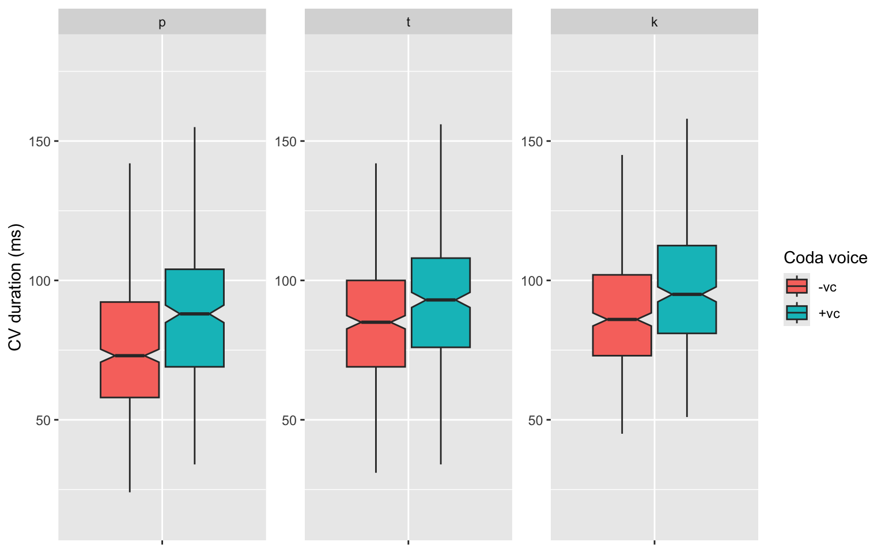
plot_overall + facet_wrap(~sub)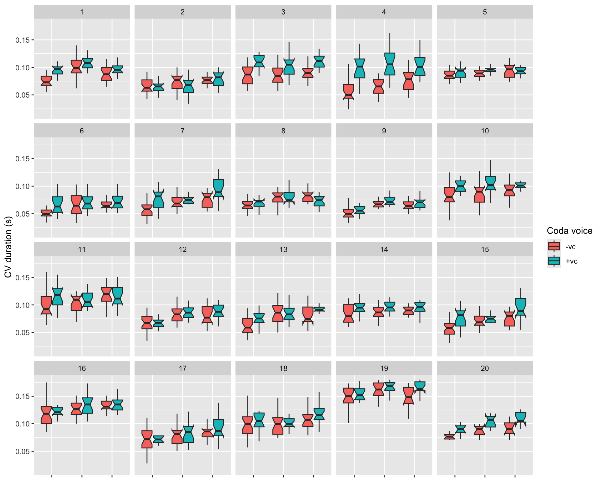
# Boxplot: CV duration by onset POA and coda voicing
plot_overall_CVdur <- ggplot(data, aes(x = ons_poa, y = CVdur, fill = coda_vc)) +
geom_boxplot(notch = TRUE, outlier.shape = NA) +
theme(axis.text.x = element_blank()) +
labs(x = NULL, y = "CV duration (ms)") +
facet_wrap(~ons_poa, scales = "free") +
scale_fill_discrete(name = "Coda voice", labels = c("-vc", "+vc"))
print(plot_overall_CVdur)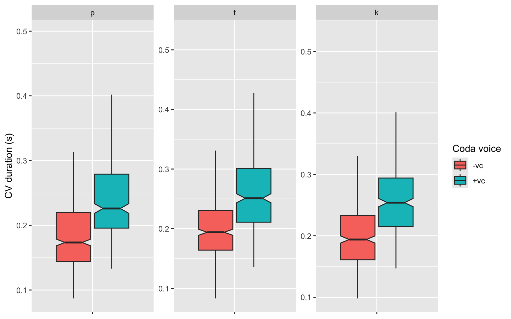
# Boxplot: VOT by onset POA, faceted by subject
plot_vot_poa <- ggplot(data, aes(x = vot, y = ons_poa, fill = coda_vc)) +
geom_boxplot(notch = TRUE, outlier.shape = NA, width = 0.5) +
theme_minimal() +
labs(x = "VOT (ms)", y = "Onset POA", fill = "Coda voice") +
scale_fill_discrete(labels = c("[-vc]", "[+vc]"))
print(plot_vot_poa + facet_wrap(~sub))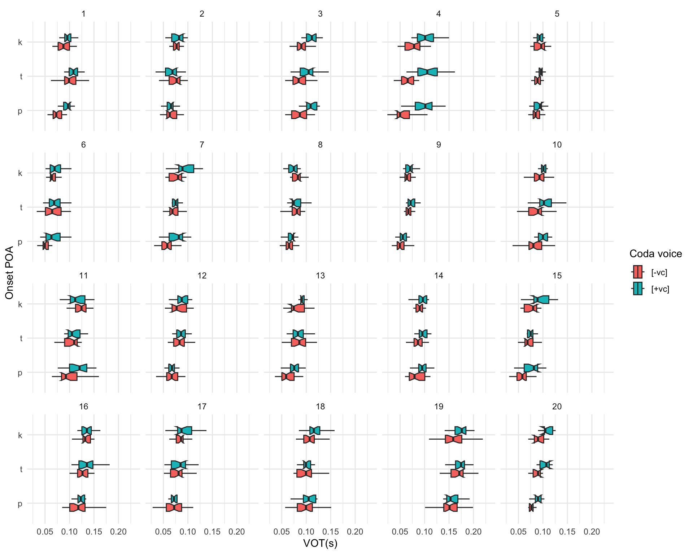
# Boxplot: vowel duration by onset POA, faceted by subject
plot_vdur_poa <- ggplot(data, aes(x = vdur, y = ons_poa, fill = coda_vc)) +
geom_boxplot(notch = TRUE, outlier.shape = NA, width = 0.5) +
theme_minimal() +
labs(x = "Vdur (ms)", y = "Onset POA", fill = "Coda voice") +
scale_x_continuous(limits = c(0, 300), expand = c(0, 0)) +
scale_fill_discrete(labels = c("[-vc]", "[+vc]"))
plot_vdur_poa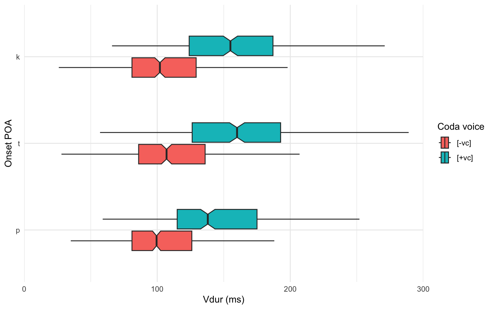
plot_vdur_poa + facet_wrap(~sub)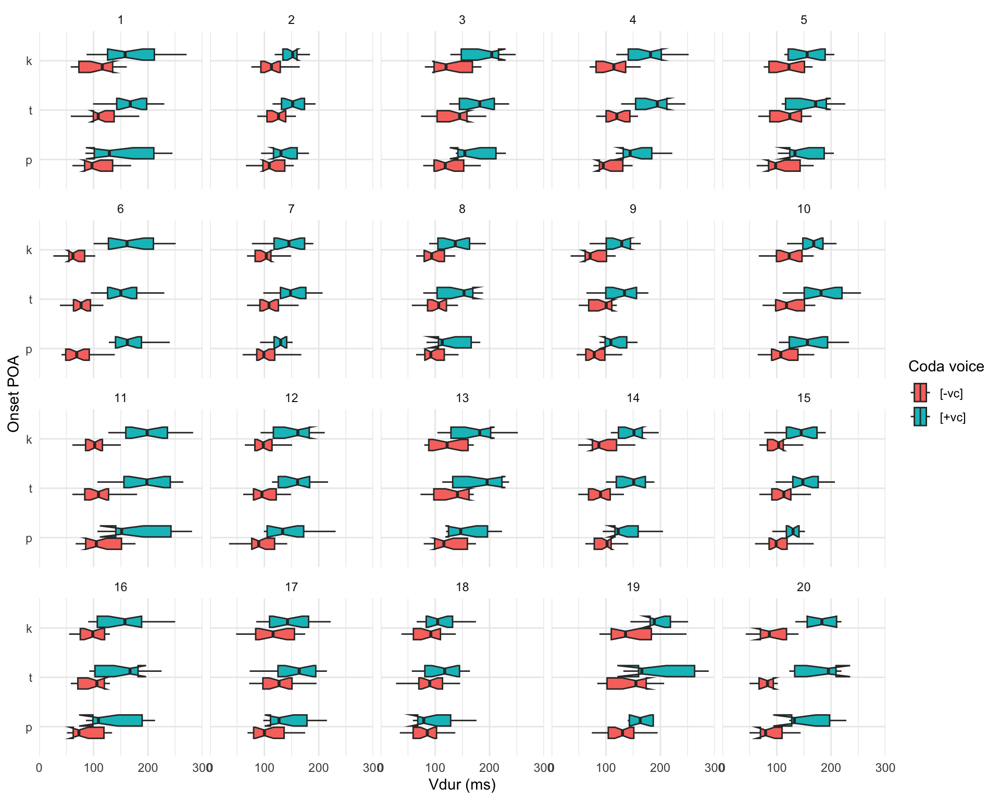
By onset POA and vowel
Ridge plots (stacked density plots) for voiceless and voiced coda tokens by POA and vowel.
plot_vowel <- ggplot(data, aes(x = vowel, y = vot, fill = coda_vc)) +
geom_boxplot(notch = TRUE) +
labs(y = "VOT (ms)", x = "Vowel", fill = "Coda voicing") +
facet_wrap(~ons_poa, scale = "free")
plot_vowel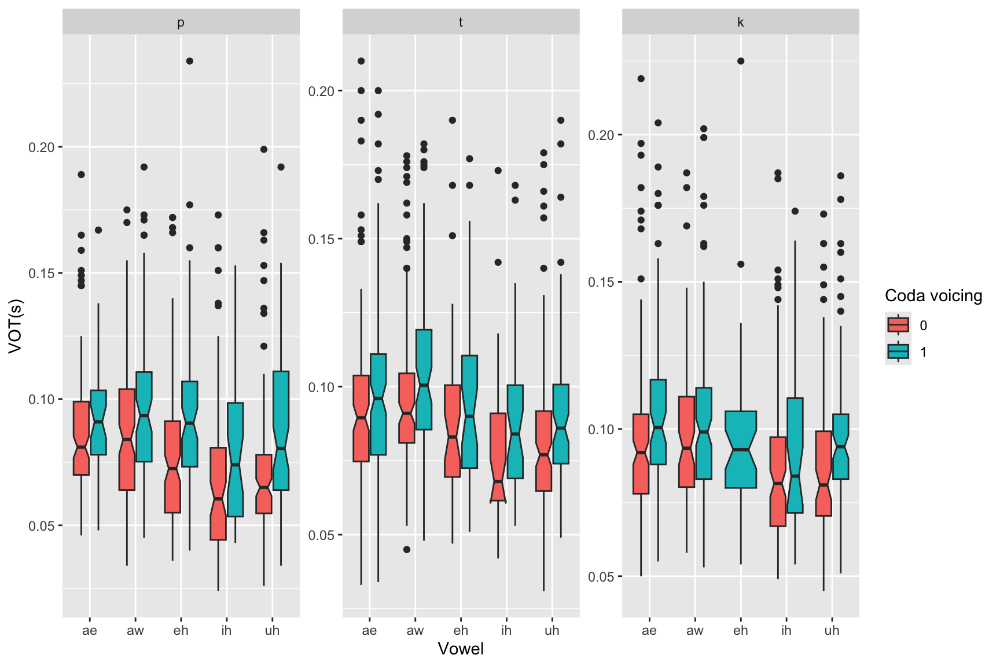
# ons_poa is already factor-coded p/t/k, so these labellers map from
# that coding to display symbols only
poa_labels <- c("p" = "/p/", "t" = "/t/", "k" = "/k/")
vowel_labels <- c("ae" = "\u00e6", "aw" = "\u0254", "eh" = "\u025b",
"ih" = "\u026a", "uh" = "\u028c")plot_vowel_ridges <- ggplot(data, aes(x = vot, y = coda_vc, fill = coda_vc)) +
geom_density_ridges(alpha = 0.7) +
scale_x_continuous(breaks = c(0, 100, 200), limits = c(0, NA)) +
scale_y_discrete(labels = c("0" = "Voiceless", "1" = "Voiced")) +
scale_fill_manual(
name = "Coda",
values = c("0" = "#F8766D", "1" = "#00BFC4"),
labels = c("0" = "Voiceless", "1" = "Voiced")
) +
labs(x = "VOT (ms)", y = "") +
facet_grid(vowel ~ ons_poa, scales = "free_x",
labeller = labeller(ons_poa = poa_labels, vowel = vowel_labels)) +
theme_ridges() +
theme(axis.text.y = element_blank(),
axis.title.x = element_text(hjust = 0.5),
strip.text = element_text(margin = margin(t = 4, b = 4)),
strip.text.x = element_text(margin = margin(t = 3, b = 4)),
strip.text.y = element_text(margin = margin(l = 3, r = 3)),
panel.spacing = unit(0.3, "cm"))
print(plot_vowel_ridges)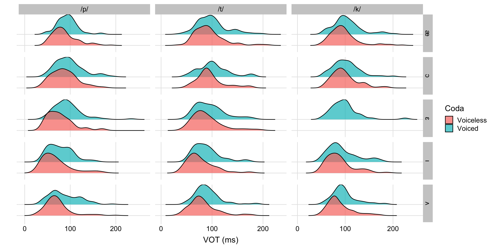
ggsave("plot_ridges.png", plot = plot_vowel_ridges, width = 12, height = 6, dpi = 300)# Same ridge plot, collapsed across vowel
plot_ridges <- ggplot(data, aes(x = vot, y = coda_vc, fill = coda_vc)) +
geom_density_ridges(alpha = 0.7) +
scale_x_continuous(breaks = c(0, 50, 100, 150, 200), limits = c(0, NA)) +
scale_y_discrete(labels = c("0" = "Voiceless", "1" = "Voiced"), expand = c(0, 0)) +
scale_fill_manual(
name = "Coda",
values = c("0" = "#F8766D", "1" = "#00BFC4"),
labels = c("0" = "Voiceless", "1" = "Voiced")
) +
labs(x = "VOT (ms)", y = "") +
facet_wrap(~ons_poa, scales = "free_x",
labeller = labeller(ons_poa = poa_labels)) +
theme_ridges() +
theme(axis.text.y = element_blank(),
axis.title.x = element_text(hjust = 0.5),
strip.text = element_text(margin = margin(t = 4, b = 4)),
strip.text.x = element_text(margin = margin(t = 3, b = 4)),
panel.spacing = unit(0.3, "cm"),
legend.position = c(0.85, 0.85),
legend.background = element_rect(fill = "white", color = "black", linewidth = 0.3),
legend.margin = margin(t = 5, r = 5, b = 5, l = 5),
legend.title = element_text(size = 12),
legend.text = element_text(size = 10))
plot_ridges
# Overlapping density plots by POA and vowel
plot_vowel_density <- ggplot(data, aes(x = vot, fill = coda_vc)) +
geom_density(alpha = 0.6) +
labs(x = "VOT (ms)", y = "Density", fill = "Coda voicing") +
facet_wrap(~ons_poa + vowel, scales = "free")
plot_vowel_density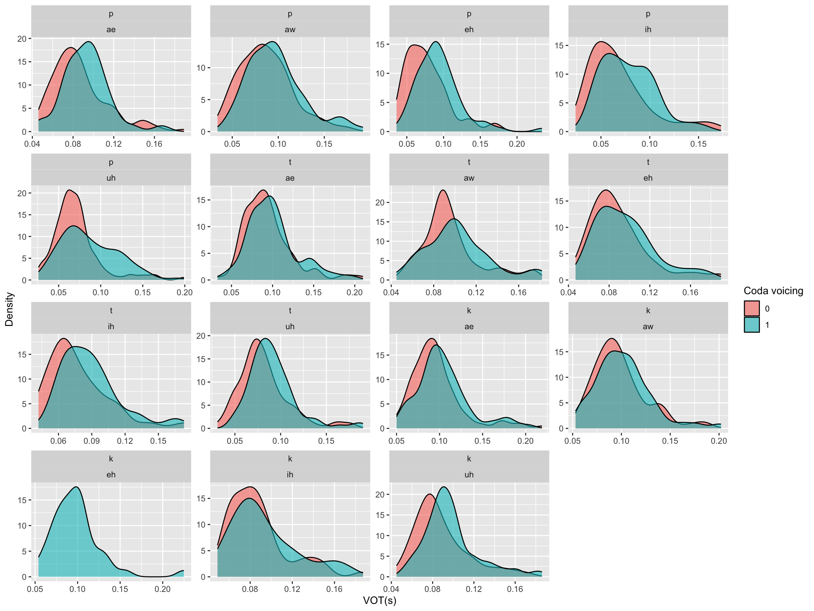
It looks like there is a clear effect of coda voicing on voiceless onset VOT.
Basic models
model_full <- lmer(vot ~ ons_poa * coda_vc * vowel + (1 | sub), data = data_mod)
summary(model_full)## Linear mixed model fit by REML ['lmerMod']
## Formula: vot ~ ons_poa * coda_vc * vowel + (1 | sub)
## Data: data_mod
##
## REML criterion at convergence: 20237.8
##
## Scaled residuals:
## Min 1Q Median 3Q Max
## -3.9687 -0.6449 -0.0587 0.5369 5.7763
##
## Random effects:
## Groups Name Variance Std.Dev.
## sub (Intercept) 550.8 23.47
## Residual 303.0 17.41
## Number of obs: 2369, groups: sub, 20
##
## Fixed effects:
## Estimate Std. Error t value
## (Intercept) 86.6983 5.4935 15.782
## ons_poat 7.3062 2.2907 3.190
## ons_poak 9.6769 2.2857 4.234
## coda_vc1 6.3179 3.2255 1.959
## vowelaw -0.1351 2.2857 -0.059
## voweleh -9.2376 2.2906 -4.033
## vowelih -18.1821 2.5533 -7.121
## voweluh -15.6945 2.2906 -6.852
## ons_poat:coda_vc1 -0.1011 3.9504 -0.026
## ons_poak:coda_vc1 1.8488 4.1083 0.450
## ons_poat:vowelaw 2.5489 3.2324 0.789
## ons_poak:vowelaw 2.3274 3.4203 0.680
## ons_poat:voweleh 5.0185 3.9532 1.269
## ons_poak:voweleh -6.6410 4.8277 -1.376
## ons_poat:vowelih 1.8091 4.1110 0.440
## ons_poak:vowelih 9.2639 3.4236 2.706
## ons_poat:voweluh 3.5997 3.2358 1.112
## ons_poak:voweluh 7.4510 3.4236 2.176
## coda_vc1:vowelaw 4.3530 4.1083 1.060
## coda_vc1:voweleh 9.7376 4.1110 2.369
## coda_vc1:vowelih 3.2590 4.6965 0.694
## coda_vc1:voweluh 9.5407 4.1110 2.321
## ons_poat:coda_vc1:vowelaw -3.9976 5.3456 -0.748
## ons_poak:coda_vc1:vowelaw -9.3687 5.4634 -1.715
## ons_poat:coda_vc1:voweleh -9.5698 6.1351 -1.560
## ons_poat:coda_vc1:vowelih 1.9088 6.5419 0.292
## ons_poak:coda_vc1:vowelih -5.0716 6.2380 -0.813
## ons_poat:coda_vc1:voweluh -6.6254 5.3477 -1.239
## ons_poak:coda_vc1:voweluh -8.0678 5.5851 -1.445## fit warnings:
## fixed-effect model matrix is rank deficient so dropping 1 column / coefficientRemoving the vowel term (reference level /p/, matching
the ons_poa factor coding set above – no re-recoding needed
here):
model <- lmer(vot ~ ons_poa * coda_vc + (1 | sub), data = data_mod)
summary(model)## Linear mixed model fit by REML ['lmerMod']
## Formula: vot ~ ons_poa * coda_vc + (1 | sub)
## Data: data_mod
##
## REML criterion at convergence: 20585.2
##
## Scaled residuals:
## Min 1Q Median 3Q Max
## -3.5089 -0.6534 -0.0630 0.5446 5.6375
##
## Random effects:
## Groups Name Variance Std.Dev.
## sub (Intercept) 550.6 23.46
## Residual 335.7 18.32
## Number of obs: 2369, groups: sub, 20
##
## Fixed effects:
## Estimate Std. Error t value
## (Intercept) 78.715 5.306 14.836
## ons_poat 10.766 1.186 9.074
## ons_poak 13.786 1.218 11.323
## coda_vc1 12.075 1.302 9.274
## ons_poat:coda_vc1 -4.456 1.855 -2.403
## ons_poak:coda_vc1 -4.354 1.876 -2.320
##
## Correlation of Fixed Effects:
## (Intr) ons_pt ons_pk cd_vc1 ons_pt:_1
## ons_poat -0.098
## ons_poak -0.096 0.429
## coda_vc1 -0.090 0.401 0.391
## ons_pt:cd_1 0.063 -0.640 -0.274 -0.702
## ons_pk:cd_1 0.062 -0.278 -0.649 -0.694 0.487Plot of the model
p_lmer <- ggplot(data_mod, aes(x = vdur, y = vot, color = coda_vc)) +
geom_point() +
geom_smooth(method = lm) +
xlab("Vowel dur (ms)") + ylab("VOT (ms)")
p_lmer + facet_wrap(~ons_poa)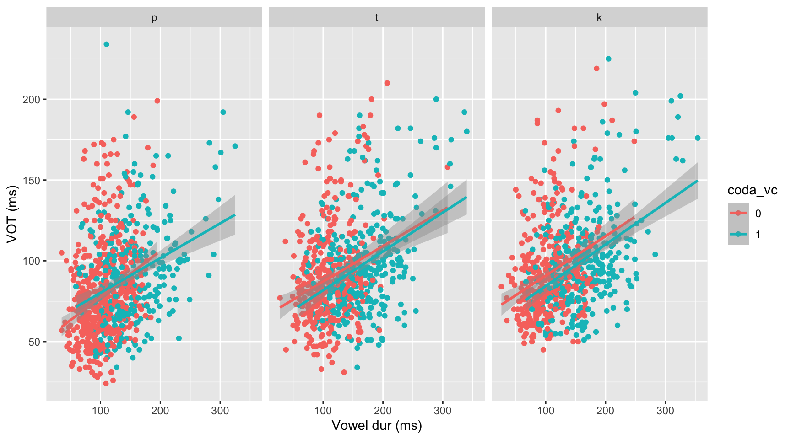
GLMM: predicting coda voicing from onset VOT and POA
model_coda <- glmer(
coda_vc ~ vot * ons_poa + (1 | sub),
data = data,
family = binomial(link = "logit")
)
summary(model_coda)## Generalized linear mixed model fit by maximum likelihood (Laplace
## Approximation) [glmerMod]
## Family: binomial ( logit )
## Formula: coda_vc ~ vot * ons_poa + (1 | sub)
## Data: data
##
## AIC BIC logLik -2*log(L) df.resid
## 3147.5 3187.9 -1566.7 3133.5 2362
##
## Scaled residuals:
## Min 1Q Median 3Q Max
## -2.3338 -0.8486 -0.6116 1.0500 2.0659
##
## Random effects:
## Groups Name Variance Std.Dev.
## sub (Intercept) 0.2431 0.493
## Number of obs: 2369, groups: sub, 20
##
## Fixed effects:
## Estimate Std. Error z value Pr(>|z|)
## (Intercept) -2.665916 0.311568 -8.556 < 2e-16 ***
## vot 0.025080 0.003317 7.560 4.03e-14 ***
## ons_poat 0.498476 0.332384 1.500 0.134
## ons_poak 0.424168 0.347983 1.219 0.223
## vot:ons_poat -0.003885 0.003520 -1.104 0.270
## vot:ons_poak -0.002892 0.003617 -0.800 0.424
## ---
## Signif. codes: 0 '***' 0.001 '**' 0.01 '*' 0.05 '.' 0.1 ' ' 1
##
## Correlation of Fixed Effects:
## (Intr) vot ons_pt ons_pk vt:ns_pt
## vot -0.905
## ons_poat -0.429 0.415
## ons_poak -0.386 0.371 0.431
## vot:ons_pot 0.458 -0.504 -0.947 -0.419
## vot:ons_pok 0.434 -0.478 -0.428 -0.949 0.471
## optimizer (Nelder_Mead) convergence code: 0 (OK)
## Model failed to converge with max|grad| = 0.00255993 (tol = 0.002, component 1)
## See ?lme4::convergence and ?lme4::troubleshooting.
## Model is nearly unidentifiable: very large eigenvalue
## - Rescale variables?# Predictions across a range of VOT values, for each POA
vot_range <- seq(from = 0, to = 250, by = 5)
sub_ref <- unique(data$sub)[1]
plot_data <- expand_grid(
vot = vot_range,
ons_poa = levels(data$ons_poa), # already "p", "t", "k", in that order
sub = sub_ref
)
plot_data$ons_poa <- factor(plot_data$ons_poa, levels = levels(data$ons_poa))
plot_data$coda_vc <- NA
plot_data$predicted_prob <- predict(model_coda, newdata = plot_data,
type = "response", re.form = ~(1 | sub))
vc_pred <- ggplot(plot_data, aes(x = vot, y = predicted_prob, color = ons_poa)) +
geom_line(linewidth = 2) +
labs(
title = "",
x = "VOT (ms)",
y = "Predicted Probability of Voiced Coda",
color = "Onset POA"
) +
theme_minimal() +
theme(
plot.title = element_text(hjust = 0.5, size = 16),
axis.title = element_text(size = 14),
legend.title = element_text(size = 12),
legend.text = element_text(size = 10)
)
vc_pred
ggsave("vc_pred.png", plot = vc_pred, bg = "white", width = 7, height = 4, dpi = 300)Bayesian mixed-effects model of VOT ~ coda voicing
Reference level for ons_poa is /p/, set
once in the data preparation section above.
# Confirm reference level / contrast coding before fitting
contrasts(data_mod$ons_poa)## t k
## p 0 0
## t 1 0
## k 0 1get_prior(vot ~ ons_poa * coda_vc + (1 + ons_poa * coda_vc | sub),
data = data_mod, family = gaussian())## prior class coef group resp dpar nlpar lb ub
## (flat) b
## (flat) b coda_vc1
## (flat) b ons_poak
## (flat) b ons_poak:coda_vc1
## (flat) b ons_poat
## (flat) b ons_poat:coda_vc1
## lkj(1) cor
## lkj(1) cor sub
## student_t(3, 86, 25.2) Intercept
## student_t(3, 0, 25.2) sd 0
## student_t(3, 0, 25.2) sd sub 0
## student_t(3, 0, 25.2) sd coda_vc1 sub 0
## student_t(3, 0, 25.2) sd Intercept sub 0
## student_t(3, 0, 25.2) sd ons_poak sub 0
## student_t(3, 0, 25.2) sd ons_poak:coda_vc1 sub 0
## student_t(3, 0, 25.2) sd ons_poat sub 0
## student_t(3, 0, 25.2) sd ons_poat:coda_vc1 sub 0
## student_t(3, 0, 25.2) sigma 0
## tag source
## default
## (vectorized)
## (vectorized)
## (vectorized)
## (vectorized)
## (vectorized)
## default
## (vectorized)
## default
## default
## (vectorized)
## (vectorized)
## (vectorized)
## (vectorized)
## (vectorized)
## (vectorized)
## (vectorized)
## defaultMaximal random effects structure (primary model)
Because onset place of articulation and coda voicing are both within-subject manipulations, a random-intercept-only model assumes every participant shows the same coda-voicing effect (and the same place-of-articulation effects), differing only in their overall baseline VOT. Following Barr, Levy, Scheepers & Tily (2013), our primary model instead includes by-subject random slopes for place of articulation, coda voicing, and their interaction, plus the full correlation structure among all random effects, from the outset. This guards against anti-conservative (too-narrow) intervals for the fixed effects if speakers actually differ in the size of the coda-voicing effect, not just their baseline VOT. We fit this maximal structure first; a reduced structure is only considered as a fallback if the maximal model fails to converge (see below).
We fit the maximal structure twice: once with brms’
default weakly informative priors, and once with the literature-informed
priors used throughout this document, so that the same
default-vs-informed comparison we would otherwise have run on an
intercept-only model is instead run on the model we actually report. The
informed priors below encode only what the literature actually supports
well: the relative place-of-articulation ordering and
approximate contrast magnitudes (/p/ \(<\) /t/ \(<\) /k/), and non-negativity of the
absolute /p/ baseline. They deliberately do not encode a specific
absolute baseline value for /p/, since English VOT for a given place of
articulation varies considerably across speech styles and elicitation
methods, and we have no single well-calibrated value to anchor it
to.
maximal_priors <- c(
# Intercept: no informative location prior. English /p/ VOT varies
# considerably across speech styles, elicitation methods, and
# corpora (careful/citation-form speech tends to run longer than
# casual speech), so we don't have a single well-calibrated
# absolute value to anchor the baseline to -- unlike the POA
# *contrasts* below, where the ordering and approximate relative
# magnitude are well established across studies regardless of
# absolute baseline. We only constrain the intercept to be
# non-negative (VOT cannot be negative for voiceless stops in this
# coding), via a wide, effectively flat prior over the plausible
# range combined with a lower bound at zero.
prior(normal(0, 100), class = Intercept, lb = 0),
# Strongly informed: established literature on the *relative*
# place-of-articulation ordering and approximate contrast
# magnitude (more posterior places of articulation associated with
# longer VOT), independent of the absolute baseline
prior(normal(15, 8), class = b, coef = ons_poat),
prior(normal(30, 12), class = b, coef = ons_poak),
# Weakly informed / regularizing: the focal, untested hypothesis
prior(normal(0, 20), class = b, coef = "coda_vc1"),
prior(normal(0, 15), class = b, coef = "ons_poat:coda_vc1"),
prior(normal(0, 15), class = b, coef = "ons_poak:coda_vc1"),
# Random-effect SDs (applies to intercept + all random slopes)
prior(normal(0, 20), class = sd),
# Residual SD
prior(normal(0, 25), class = sigma),
# Correlation matrix among random effects: lkj(2) mildly shrinks
# correlations toward zero relative to the lkj(1) (uniform) default,
# which helps stabilize estimation with only 20 subjects
prior(lkj(2), class = cor)
)# Maximal models are harder to sample; more iterations and a higher
# adapt_delta reduce divergent transitions at the cost of runtime.
# Both models share these settings so they're directly comparable.
# Default (weakly informative) priors, maximal random-effects structure
bayes_model_maximal_default <- brm(
vot ~ ons_poa * coda_vc + (1 + ons_poa * coda_vc | sub),
data = data_mod,
family = gaussian(),
chains = 4,
iter = 4000,
warmup = 1500,
cores = 4,
seed = 123,
control = list(adapt_delta = 0.95)
)
# Literature-informed priors, maximal random-effects structure
bayes_model_maximal_informed <- brm(
vot ~ ons_poa * coda_vc + (1 + ons_poa * coda_vc | sub),
data = data_mod,
family = gaussian(),
prior = maximal_priors,
chains = 4,
iter = 4000,
warmup = 1500,
cores = 4,
seed = 123,
control = list(adapt_delta = 0.95)
)Convergence diagnostics
Before interpreting either model, check for divergent transitions, \(\hat{R}\), and effective sample size. A high divergence count, \(\hat{R} > 1.02\), or very low ESS on the random-slope or correlation parameters would indicate the data do not fully support this structure, in which case the simplified alternatives below should be preferred over forcing the maximal model.
print(summary(bayes_model_maximal_default), digits = 2)## Family: gaussian
## Links: mu = identity
## Formula: vot ~ ons_poa * coda_vc + (1 + ons_poa * coda_vc | sub)
## Data: data_mod (Number of observations: 2369)
## Draws: 4 chains, each with iter = 4000; warmup = 1500; thin = 1;
## total post-warmup draws = 10000
##
## Multilevel Hyperparameters:
## ~sub (Number of levels: 20)
## Estimate Est.Error l-95% CI u-95% CI
## sd(Intercept) 26.29 4.70 18.93 37.09
## sd(ons_poat) 5.88 1.57 3.16 9.39
## sd(ons_poak) 1.45 1.11 0.05 4.13
## sd(coda_vc1) 8.99 1.92 5.87 13.29
## sd(ons_poat:coda_vc1) 2.20 1.66 0.09 6.18
## sd(ons_poak:coda_vc1) 4.67 2.37 0.38 9.57
## cor(Intercept,ons_poat) -0.09 0.24 -0.53 0.39
## cor(Intercept,ons_poak) -0.09 0.36 -0.73 0.64
## cor(ons_poat,ons_poak) 0.11 0.37 -0.63 0.76
## cor(Intercept,coda_vc1) -0.06 0.22 -0.47 0.37
## cor(ons_poat,coda_vc1) -0.05 0.25 -0.54 0.44
## cor(ons_poak,coda_vc1) -0.02 0.36 -0.69 0.68
## cor(Intercept,ons_poat:coda_vc1) 0.02 0.37 -0.68 0.70
## cor(ons_poat,ons_poat:coda_vc1) -0.02 0.37 -0.70 0.69
## cor(ons_poak,ons_poat:coda_vc1) -0.06 0.38 -0.74 0.67
## cor(coda_vc1,ons_poat:coda_vc1) -0.01 0.36 -0.69 0.67
## cor(Intercept,ons_poak:coda_vc1) -0.03 0.29 -0.58 0.55
## cor(ons_poat,ons_poak:coda_vc1) 0.31 0.31 -0.40 0.81
## cor(ons_poak,ons_poak:coda_vc1) -0.00 0.38 -0.72 0.70
## cor(coda_vc1,ons_poak:coda_vc1) -0.15 0.31 -0.69 0.50
## cor(ons_poat:coda_vc1,ons_poak:coda_vc1) -0.02 0.37 -0.71 0.70
## Rhat Bulk_ESS Tail_ESS
## sd(Intercept) 1.00 3335 4864
## sd(ons_poat) 1.00 4760 5772
## sd(ons_poak) 1.00 4702 5456
## sd(coda_vc1) 1.00 6528 7100
## sd(ons_poat:coda_vc1) 1.00 5037 5936
## sd(ons_poak:coda_vc1) 1.00 3422 3860
## cor(Intercept,ons_poat) 1.00 10614 7812
## cor(Intercept,ons_poak) 1.00 17812 7053
## cor(ons_poat,ons_poak) 1.00 13304 7622
## cor(Intercept,coda_vc1) 1.00 9625 7767
## cor(ons_poat,coda_vc1) 1.00 5221 6326
## cor(ons_poak,coda_vc1) 1.00 1354 3650
## cor(Intercept,ons_poat:coda_vc1) 1.00 16096 6140
## cor(ons_poat,ons_poat:coda_vc1) 1.00 15605 7536
## cor(ons_poak,ons_poat:coda_vc1) 1.00 7643 7836
## cor(coda_vc1,ons_poat:coda_vc1) 1.00 12153 8174
## cor(Intercept,ons_poak:coda_vc1) 1.00 13573 7445
## cor(ons_poat,ons_poak:coda_vc1) 1.00 9972 7092
## cor(ons_poak,ons_poak:coda_vc1) 1.00 5226 7337
## cor(coda_vc1,ons_poak:coda_vc1) 1.00 9092 7663
## cor(ons_poat:coda_vc1,ons_poak:coda_vc1) 1.00 5580 8146
##
## Regression Coefficients:
## Estimate Est.Error l-95% CI u-95% CI Rhat Bulk_ESS Tail_ESS
## Intercept 78.44 5.88 66.65 90.37 1.00 1423 2383
## ons_poat 10.86 1.80 7.37 14.45 1.00 7317 6571
## ons_poak 13.86 1.25 11.40 16.28 1.00 13523 8368
## coda_vc1 12.27 2.41 7.53 17.01 1.00 7175 7614
## ons_poat:coda_vc1 -4.52 1.90 -8.22 -0.79 1.00 13188 7601
## ons_poak:coda_vc1 -4.39 2.18 -8.69 -0.07 1.00 10726 7382
##
## Further Distributional Parameters:
## Estimate Est.Error l-95% CI u-95% CI Rhat Bulk_ESS Tail_ESS
## sigma 17.75 0.27 17.24 18.28 1.00 19529 7035
##
## Draws were sampled using sampling(NUTS). For each parameter, Bulk_ESS
## and Tail_ESS are effective sample size measures, and Rhat is the potential
## scale reduction factor on split chains (at convergence, Rhat = 1).sum(rstan::get_divergent_iterations(bayes_model_maximal_default$fit))## [1] 0print(summary(bayes_model_maximal_informed), digits = 2)## Family: gaussian
## Links: mu = identity
## Formula: vot ~ ons_poa * coda_vc + (1 + ons_poa * coda_vc | sub)
## Data: data_mod (Number of observations: 2369)
## Draws: 4 chains, each with iter = 4000; warmup = 1500; thin = 1;
## total post-warmup draws = 10000
##
## Multilevel Hyperparameters:
## ~sub (Number of levels: 20)
## Estimate Est.Error l-95% CI u-95% CI
## sd(Intercept) 25.57 4.18 18.84 35.24
## sd(ons_poat) 5.76 1.57 3.00 9.17
## sd(ons_poak) 1.48 1.12 0.05 4.10
## sd(coda_vc1) 8.88 1.91 5.79 13.19
## sd(ons_poat:coda_vc1) 2.20 1.69 0.08 6.28
## sd(ons_poak:coda_vc1) 4.63 2.29 0.42 9.30
## cor(Intercept,ons_poat) -0.07 0.22 -0.48 0.36
## cor(Intercept,ons_poak) -0.07 0.31 -0.65 0.54
## cor(ons_poat,ons_poak) 0.09 0.33 -0.56 0.69
## cor(Intercept,coda_vc1) -0.05 0.20 -0.44 0.35
## cor(ons_poat,coda_vc1) -0.05 0.24 -0.50 0.42
## cor(ons_poak,coda_vc1) -0.01 0.32 -0.63 0.60
## cor(Intercept,ons_poat:coda_vc1) 0.01 0.32 -0.59 0.60
## cor(ons_poat,ons_poat:coda_vc1) -0.02 0.33 -0.63 0.60
## cor(ons_poak,ons_poat:coda_vc1) -0.05 0.34 -0.67 0.60
## cor(coda_vc1,ons_poat:coda_vc1) -0.01 0.32 -0.61 0.61
## cor(Intercept,ons_poak:coda_vc1) -0.03 0.26 -0.53 0.49
## cor(ons_poat,ons_poak:coda_vc1) 0.26 0.29 -0.37 0.74
## cor(ons_poak,ons_poak:coda_vc1) -0.00 0.33 -0.63 0.63
## cor(coda_vc1,ons_poak:coda_vc1) -0.14 0.28 -0.63 0.44
## cor(ons_poat:coda_vc1,ons_poak:coda_vc1) -0.01 0.33 -0.64 0.62
## Rhat Bulk_ESS Tail_ESS
## sd(Intercept) 1.00 3079 5162
## sd(ons_poat) 1.00 4242 4682
## sd(ons_poak) 1.00 4000 4716
## sd(coda_vc1) 1.00 4826 5873
## sd(ons_poat:coda_vc1) 1.00 4222 5000
## sd(ons_poak:coda_vc1) 1.00 2862 2958
## cor(Intercept,ons_poat) 1.00 7551 6817
## cor(Intercept,ons_poak) 1.00 14007 7435
## cor(ons_poat,ons_poak) 1.00 10893 7421
## cor(Intercept,coda_vc1) 1.00 6764 6528
## cor(ons_poat,coda_vc1) 1.00 4193 5861
## cor(ons_poak,coda_vc1) 1.01 1442 3497
## cor(Intercept,ons_poat:coda_vc1) 1.00 12367 7404
## cor(ons_poat,ons_poat:coda_vc1) 1.00 12933 8397
## cor(ons_poak,ons_poat:coda_vc1) 1.00 8306 7543
## cor(coda_vc1,ons_poat:coda_vc1) 1.00 11526 8582
## cor(Intercept,ons_poak:coda_vc1) 1.00 11843 7326
## cor(ons_poat,ons_poak:coda_vc1) 1.00 7935 6682
## cor(ons_poak,ons_poak:coda_vc1) 1.00 5301 6055
## cor(coda_vc1,ons_poak:coda_vc1) 1.00 8498 7654
## cor(ons_poat:coda_vc1,ons_poak:coda_vc1) 1.00 5624 8082
##
## Regression Coefficients:
## Estimate Est.Error l-95% CI u-95% CI Rhat Bulk_ESS Tail_ESS
## Intercept 78.25 5.68 66.83 89.60 1.00 1138 2145
## ons_poat 11.11 1.72 7.80 14.52 1.00 5487 6728
## ons_poak 14.03 1.25 11.61 16.45 1.00 8954 7083
## coda_vc1 12.10 2.32 7.45 16.67 1.00 4773 6324
## ons_poat:coda_vc1 -4.48 1.88 -8.22 -0.77 1.00 9645 7118
## ons_poak:coda_vc1 -4.37 2.13 -8.60 -0.17 1.00 7707 7192
##
## Further Distributional Parameters:
## Estimate Est.Error l-95% CI u-95% CI Rhat Bulk_ESS Tail_ESS
## sigma 17.75 0.27 17.23 18.27 1.00 16018 6887
##
## Draws were sampled using sampling(NUTS). For each parameter, Bulk_ESS
## and Tail_ESS are effective sample size measures, and Rhat is the potential
## scale reduction factor on split chains (at convergence, Rhat = 1).sum(rstan::get_divergent_iterations(bayes_model_maximal_informed$fit))## [1] 0# Visual check on chains and random-effect correlations (informed model)
plot(bayes_model_maximal_informed, variable = "^sd_", regex = TRUE)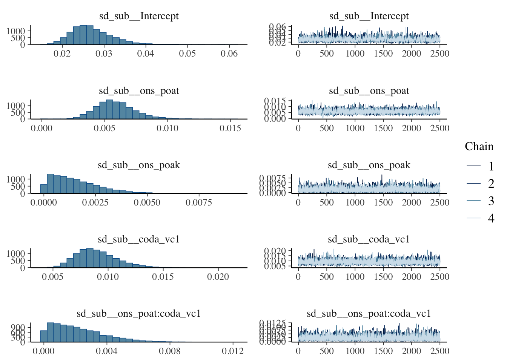
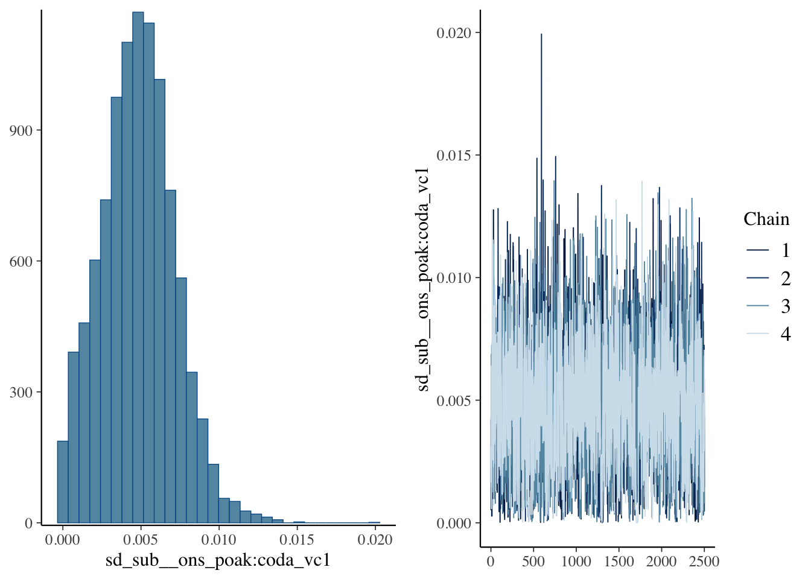
plot(bayes_model_maximal_informed, variable = "^cor_", regex = TRUE)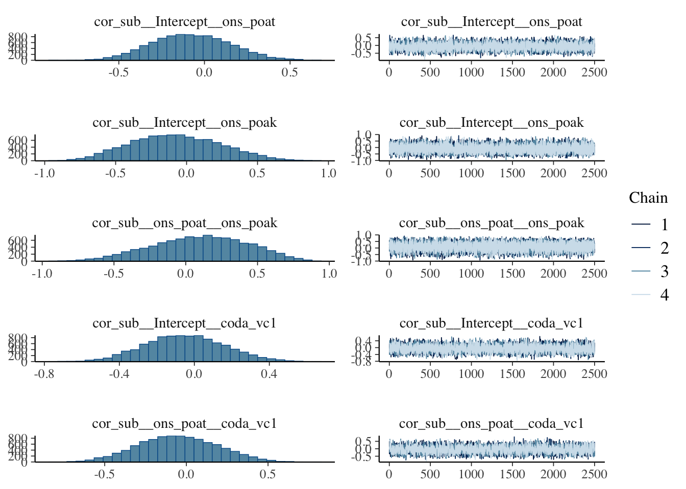
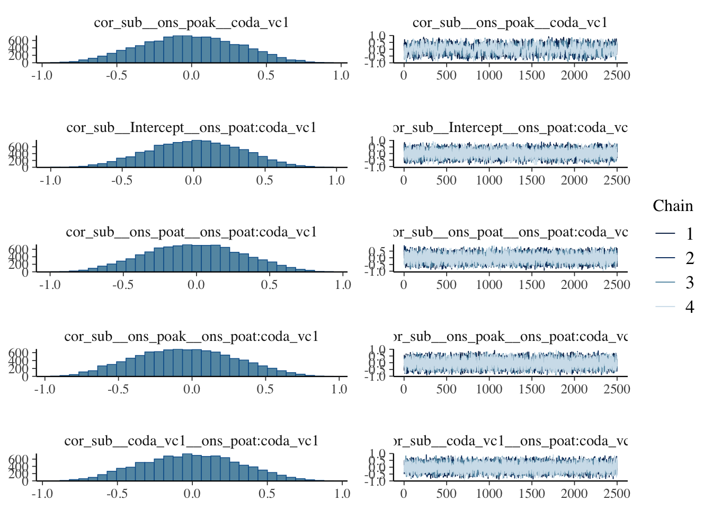
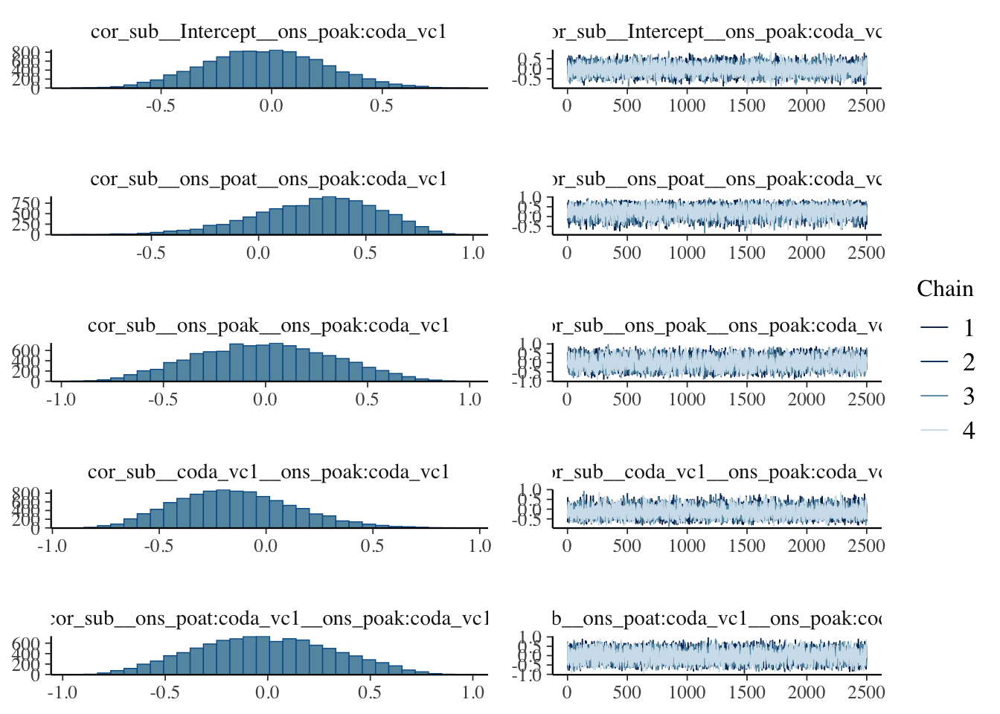
Default vs. informed priors, on the maximal structure
loo_maximal_default <- loo(bayes_model_maximal_default)
loo_maximal_informed <- loo(bayes_model_maximal_informed)
loo_compare(loo_maximal_default, loo_maximal_informed)## model elpd_diff se_diff p_worse diag_diff
## bayes_model_maximal_informed 0.0 0.0 NA
## bayes_model_maximal_default -0.5 0.3 0.97 |elpd_diff| < 4
## diag_elpd
##
## Direct posterior comparison for the focal coefficient:
posterior_summary(bayes_model_maximal_default, variable = "b_coda_vc1")## Estimate Est.Error Q2.5 Q97.5
## b_coda_vc1 12.26958 2.405759 7.53301 17.01492posterior_summary(bayes_model_maximal_informed, variable = "b_coda_vc1")## Estimate Est.Error Q2.5 Q97.5
## b_coda_vc1 12.10239 2.317953 7.448575 16.66984pp_check(bayes_model_maximal_informed, type = "hist", ndraws = 100) +
ggtitle("Prior Predictive Check: Do simulated VOTs look reasonable?")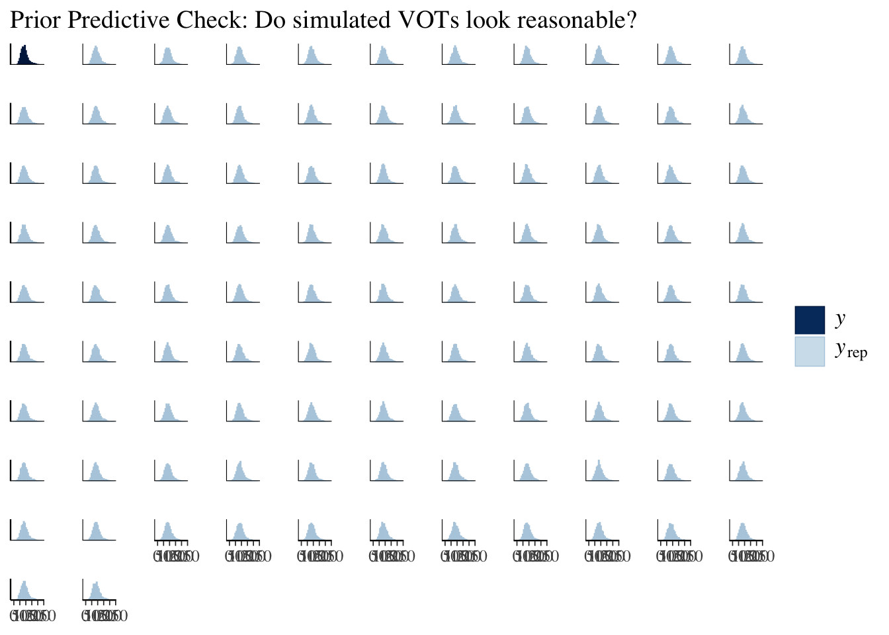
Full-precision estimates for all fixed effects
maximal_default_fx <- as.data.frame(posterior_summary(bayes_model_maximal_default)) %>%
rownames_to_column("parameter") %>%
filter(str_starts(parameter, "b_")) %>%
rename_with(~ paste0("default_", .x), -parameter)
maximal_informed_fx <- as.data.frame(posterior_summary(bayes_model_maximal_informed)) %>%
rownames_to_column("parameter") %>%
filter(str_starts(parameter, "b_")) %>%
rename_with(~ paste0("informed_", .x), -parameter)
maximal_fixef_comparison <- left_join(maximal_default_fx, maximal_informed_fx, by = "parameter") %>%
mutate(across(where(is.numeric), ~ round(.x, 2)))
maximal_fixef_comparison## parameter default_Estimate default_Est.Error default_Q2.5
## 1 b_Intercept 78.44 5.88 66.65
## 2 b_ons_poat 10.86 1.80 7.37
## 3 b_ons_poak 13.86 1.25 11.40
## 4 b_coda_vc1 12.27 2.41 7.53
## 5 b_ons_poat:coda_vc1 -4.52 1.90 -8.22
## 6 b_ons_poak:coda_vc1 -4.39 2.18 -8.69
## default_Q97.5 informed_Estimate informed_Est.Error informed_Q2.5
## 1 90.37 78.25 5.68 66.83
## 2 14.45 11.11 1.72 7.80
## 3 16.28 14.03 1.25 11.61
## 4 17.01 12.10 2.32 7.45
## 5 -0.79 -4.48 1.88 -8.22
## 6 -0.07 -4.37 2.13 -8.60
## informed_Q97.5
## 1 89.60
## 2 14.52
## 3 16.45
## 4 16.67
## 5 -0.77
## 6 -0.17If the maximal model does not converge cleanly
Both maximal models above converged cleanly in our run (zero divergent transitions, \(\hat{R} \leq 1.00\) throughout), so no simplification was necessary. If a future re-fit (e.g., after adding trials, changing priors, or modifying the formula) shows divergent transitions, elevated \(\hat{R}\), or very low ESS on the random-effect correlations, simplify in this order before abandoning the random-slopes structure entirely:
# Step 1: drop correlations among random effects, keep all slopes
# (equivalent to lme4's `||` syntax)
bayes_model_zerocorr <- brm(
vot ~ ons_poa * coda_vc + (1 + ons_poa * coda_vc || sub),
data = data_mod,
family = gaussian(),
prior = maximal_priors[maximal_priors$class != "cor", ],
chains = 4,
iter = 4000,
warmup = 1500,
cores = 4,
seed = 123,
control = list(adapt_delta = 0.95)
)
# Step 2: if still problematic, drop the random slope for the
# interaction term first (typically the hardest to estimate),
# retaining random slopes for the main effects
bayes_model_reduced <- brm(
vot ~ ons_poa * coda_vc + (1 + ons_poa + coda_vc || sub),
data = data_mod,
family = gaussian(),
prior = maximal_priors[maximal_priors$class != "cor", ],
chains = 4,
iter = 4000,
warmup = 1500,
cores = 4,
seed = 123,
control = list(adapt_delta = 0.95)
)
# Compare whichever structures were fitted; report this comparison
# alongside the final model choice
loo_compare(loo_maximal_informed, loo(bayes_model_zerocorr), loo(bayes_model_reduced))Random-intercept-only models (for comparison only)
The models below are not the primary reported analysis. They are included only to document why the maximal structure above was adopted: comparing a simpler, random-intercept-only structure against the maximal one lets us confirm that the extra complexity is actually supported by the data, and to show explicitly how much the intercept-only structure understates uncertainty in the coda-voicing effect. If you are only interested in the primary results, skip to the Ridge Plots section.
bayes_model_default <- brm(
vot ~ ons_poa * coda_vc + (1 | sub),
data = data_mod,
family = gaussian(),
chains = 4,
iter = 2000,
cores = 4,
seed = 123
)
bayes_model_informed <- brm(
vot ~ ons_poa * coda_vc + (1 | sub),
data = data_mod,
family = gaussian(),
prior = maximal_priors[maximal_priors$class != "cor", ],
chains = 4,
iter = 2000,
cores = 4,
seed = 123
)# Does adding random slopes actually improve predictive fit?
loo_default <- loo(bayes_model_default)
loo_informed <- loo(bayes_model_informed)
loo_compare(loo_informed, loo_maximal_informed)## model elpd_diff se_diff p_worse diag_diff diag_elpd
## bayes_model_maximal_informed 0.0 0.0 NA
## bayes_model_informed -54.4 12.0 1.00# How much narrower (anti-conservative) is the intercept-only
# interval for the focal coefficient, relative to the maximal model?
posterior_summary(bayes_model_informed, variable = "b_coda_vc1")## Estimate Est.Error Q2.5 Q97.5
## b_coda_vc1 12.05858 1.274259 9.499654 14.57924posterior_summary(bayes_model_maximal_informed, variable = "b_coda_vc1")## Estimate Est.Error Q2.5 Q97.5
## b_coda_vc1 12.10239 2.317953 7.448575 16.66984Does the VOT/vowel-duration ratio differ by coda voicing?
If onset VOT and vowel duration both lengthen together under a shared
word-level timing mechanism, the ratio of VOT to vowel duration
(vot_ratio, computed in the data-preparation step above)
might stay roughly constant across coda-voicing contexts even though the
raw VOT differs. Testing whether vot_ratio itself varies by
coda voicing is therefore a useful check: a credible coda-voicing effect
on the ratio would suggest VOT and vowel duration are not
simply scaling together proportionally, while a ratio effect
indistinguishable from zero would be consistent with proportional
scaling. For consistency with the primary VOT model above, this is fit
with the same maximal random-effects structure (by-subject random slopes
for place of articulation, coda voicing, and their interaction, plus
their correlations).
# Maximal random-effects structure, matching the main VOT model above
# for consistency. We do NOT reuse maximal_priors here: those priors
# (e.g., the POA contrast priors of normal(15,8)/normal(30,12) ms,
# the coda-voicing prior of normal(0,20) ms) are scaled for a
# millisecond-scale outcome, but vot_ratio is a unitless quantity
# with a very different scale (~0.8, roughly 0-1.5 range). Applying
# ms-scale priors here would be exactly the kind of units mismatch
# we corrected earlier for vot/vdur. brms' default priors are scaled
# automatically from the data, so we rely on those instead, with the
# same sampler settings (iterations, warmup, adapt_delta) as the main
# maximal model for consistency and comparable convergence behavior.
bayes_model_ratio <- brm(
vot_ratio ~ ons_poa * coda_vc + (1 + ons_poa * coda_vc | sub),
data = data_mod,
family = gaussian(),
chains = 4,
iter = 4000,
warmup = 1500,
cores = 4,
seed = 123,
control = list(adapt_delta = 0.95)
)print(summary(bayes_model_ratio), digits = 4)## Family: gaussian
## Links: mu = identity
## Formula: vot_ratio ~ ons_poa * coda_vc + (1 + ons_poa * coda_vc | sub)
## Data: data_mod (Number of observations: 2366)
## Draws: 4 chains, each with iter = 4000; warmup = 1500; thin = 1;
## total post-warmup draws = 10000
##
## Multilevel Hyperparameters:
## ~sub (Number of levels: 20)
## Estimate Est.Error l-95% CI u-95% CI
## sd(Intercept) 0.2482 0.0407 0.1831 0.3416
## sd(ons_poat) 0.0270 0.0177 0.0015 0.0665
## sd(ons_poak) 0.0382 0.0227 0.0023 0.0875
## sd(coda_vc1) 0.1404 0.0276 0.0960 0.2035
## sd(ons_poat:coda_vc1) 0.0245 0.0187 0.0009 0.0700
## sd(ons_poak:coda_vc1) 0.0359 0.0247 0.0019 0.0922
## cor(Intercept,ons_poat) -0.2049 0.3291 -0.7674 0.5031
## cor(Intercept,ons_poak) -0.1868 0.3015 -0.7168 0.4397
## cor(ons_poat,ons_poak) 0.1671 0.3731 -0.6094 0.7989
## cor(Intercept,coda_vc1) -0.6393 0.1450 -0.8586 -0.2984
## cor(ons_poat,coda_vc1) -0.0889 0.3334 -0.6993 0.5781
## cor(ons_poak,coda_vc1) -0.0181 0.3164 -0.6149 0.5973
## cor(Intercept,ons_poat:coda_vc1) -0.0797 0.3703 -0.7429 0.6487
## cor(ons_poat,ons_poat:coda_vc1) -0.0341 0.3725 -0.7075 0.6790
## cor(ons_poak,ons_poat:coda_vc1) 0.0412 0.3731 -0.6702 0.7340
## cor(coda_vc1,ons_poat:coda_vc1) -0.1116 0.3728 -0.7621 0.6389
## cor(Intercept,ons_poak:coda_vc1) -0.2586 0.3472 -0.8181 0.5087
## cor(ons_poat,ons_poak:coda_vc1) 0.0341 0.3671 -0.6674 0.7013
## cor(ons_poak,ons_poak:coda_vc1) -0.1553 0.3782 -0.7911 0.6178
## cor(coda_vc1,ons_poak:coda_vc1) 0.2267 0.3474 -0.5053 0.7998
## cor(ons_poat:coda_vc1,ons_poak:coda_vc1) 0.0629 0.3835 -0.6718 0.7508
## Rhat Bulk_ESS Tail_ESS
## sd(Intercept) 1.0001 2521 4391
## sd(ons_poat) 1.0004 3706 5008
## sd(ons_poak) 1.0005 3146 3583
## sd(coda_vc1) 1.0001 4261 6126
## sd(ons_poat:coda_vc1) 1.0007 6132 5101
## sd(ons_poak:coda_vc1) 1.0005 5112 5287
## cor(Intercept,ons_poat) 1.0001 13021 7327
## cor(Intercept,ons_poak) 1.0004 11071 7625
## cor(ons_poat,ons_poak) 1.0002 6098 7693
## cor(Intercept,coda_vc1) 0.9998 6693 7413
## cor(ons_poat,coda_vc1) 1.0007 3397 4873
## cor(ons_poak,coda_vc1) 1.0013 3705 5267
## cor(Intercept,ons_poat:coda_vc1) 1.0000 17153 7192
## cor(ons_poat,ons_poat:coda_vc1) 1.0003 12053 8154
## cor(ons_poak,ons_poat:coda_vc1) 1.0009 10312 8246
## cor(coda_vc1,ons_poat:coda_vc1) 1.0001 12986 8347
## cor(Intercept,ons_poak:coda_vc1) 1.0001 12458 7349
## cor(ons_poat,ons_poak:coda_vc1) 1.0000 10512 8253
## cor(ons_poak,ons_poak:coda_vc1) 1.0001 8820 8088
## cor(coda_vc1,ons_poak:coda_vc1) 1.0001 11418 8376
## cor(ons_poat:coda_vc1,ons_poak:coda_vc1) 1.0000 7636 8786
##
## Regression Coefficients:
## Estimate Est.Error l-95% CI u-95% CI Rhat Bulk_ESS Tail_ESS
## Intercept 0.8103 0.0570 0.6975 0.9216 1.0023 1054 2605
## ons_poat 0.0683 0.0181 0.0325 0.1033 1.0000 9245 8235
## ons_poak 0.1422 0.0198 0.1038 0.1811 1.0001 9250 8111
## coda_vc1 -0.1596 0.0369 -0.2320 -0.0860 1.0007 2373 5241
## ons_poat:coda_vc1 -0.0887 0.0270 -0.1411 -0.0352 1.0007 10070 7850
## ons_poak:coda_vc1 -0.1359 0.0283 -0.1920 -0.0807 1.0004 9781 7746
##
## Further Distributional Parameters:
## Estimate Est.Error l-95% CI u-95% CI Rhat Bulk_ESS Tail_ESS
## sigma 0.2576 0.0038 0.2503 0.2653 1.0003 22769 7339
##
## Draws were sampled using sampling(NUTS). For each parameter, Bulk_ESS
## and Tail_ESS are effective sample size measures, and Rhat is the potential
## scale reduction factor on split chains (at convergence, Rhat = 1).# Convergence check, mirroring the main maximal model's diagnostics
sum(rstan::get_divergent_iterations(bayes_model_ratio$fit))## [1] 0# Focal test: does the coda-voicing coefficient's 95% CrI exclude
# zero? If yes, the VOT/Vdur ratio differs credibly by coda voicing
# context; if the CrI spans zero, the ratio is not credibly different
# between voiced- and voiceless-coda contexts.
posterior_summary(bayes_model_ratio, variable = "b_coda_vc1")## Estimate Est.Error Q2.5 Q97.5
## b_coda_vc1 -0.1596349 0.03694017 -0.2320154 -0.0859961Ridge plots with posterior predictions
Ridge plots with posterior predictions overlaid, for the primary
maximal-random-effects models (default and informed priors), on the
shared /p/ reference level.
data_mod$poa_coda <- factor(
interaction(data_mod$coda_vc, data_mod$ons_poa),
levels = c("0.p", "1.p", "0.t", "1.t", "0.k", "1.k")
)
data_mod$coda_vc_factor <- factor(
data_mod$coda_vc,
levels = c("1", "0"),
labels = c("Voiced", "Voiceless")
)
make_ridge_plot <- function(model, plot_title = "") {
newdata <- expand_grid(
ons_poa = c("p", "t", "k"),
coda_vc = c("0", "1")
)
newdata$ons_poa <- factor(newdata$ons_poa, levels = levels(data_mod$ons_poa))
newdata$coda_vc <- factor(newdata$coda_vc, levels = levels(data_mod$coda_vc))
preds <- posterior_epred(model, newdata = newdata,
allow_new_levels = TRUE, re_formula = NA)
pred_summary <- newdata %>%
mutate(
estimate = apply(preds, 2, mean),
lower = apply(preds, 2, quantile, 0.025),
upper = apply(preds, 2, quantile, 0.975)
)
pred_summary$poa_coda <- factor(
interaction(pred_summary$coda_vc, pred_summary$ons_poa),
levels = c("0.p", "1.p", "0.t", "1.t", "0.k", "1.k")
)
ggplot() +
geom_density_ridges(
data = data_mod,
aes(x = vot, y = poa_coda, fill = poa_coda, linetype = coda_vc_factor),
alpha = 0.8, scale = 0.8
) +
scale_linetype_manual(
name = "Coda voicing",
values = c("Voiceless" = "dashed", "Voiced" = "solid")
) +
geom_point(
data = pred_summary,
aes(x = estimate, y = poa_coda, color = poa_coda),
size = 3, position = position_nudge(y = 0.2)
) +
geom_errorbarh(
data = pred_summary,
aes(x = estimate, y = poa_coda, xmin = lower, xmax = upper, color = poa_coda),
height = 0.1, position = position_nudge(y = 0.2)
) +
scale_fill_manual(values = c(
"0.p" = "#B71C1C", "1.p" = "#FFCDD2",
"0.t" = "#1B5E20", "1.t" = "#C8E6C9",
"0.k" = "#0D47A1", "1.k" = "#BBDEFB"
)) +
scale_color_manual(values = c(
"0.p" = "#67000D", "1.p" = "#A50F15",
"0.t" = "#00441B", "1.t" = "#006D2C",
"0.k" = "#08306B", "1.k" = "#08519C"
)) +
annotate("text", x = 10, y = 1.5, label = "/p/", hjust = 1.2, vjust = 0.5,
size = 4, fontface = "bold") +
annotate("text", x = 10, y = 3.5, label = "/t/", hjust = 1.2, vjust = 0.5,
size = 4, fontface = "bold") +
annotate("text", x = 10, y = 5.5, label = "/k/", hjust = 1.2, vjust = 0.5,
size = 4, fontface = "bold") +
labs(x = "VOT (ms)", y = "", title = plot_title) +
xlim(0, 200) +
coord_cartesian(ylim = c(0.5, 6.5)) +
theme_minimal() +
guides(fill = "none", color = "none",
linetype = guide_legend(title = "Coda voicing", direction = "vertical")) +
theme(
axis.text.y = element_blank(),
axis.ticks.y = element_blank(),
legend.position = c(0.85, 0.20),
legend.background = element_rect(fill = "white", color = "black", linewidth = 0.3),
panel.grid.major.y = element_blank(),
panel.grid.minor.y = element_blank(),
plot.margin = margin(t = 15, r = 5, b = 0, l = 5, unit = "pt")
) +
scale_y_discrete(expand = expansion(mult = c(0.05, 0.15)))
}Default-prior model
p_default <- make_ridge_plot(bayes_model_maximal_default, plot_title = "Default priors")
print(p_default)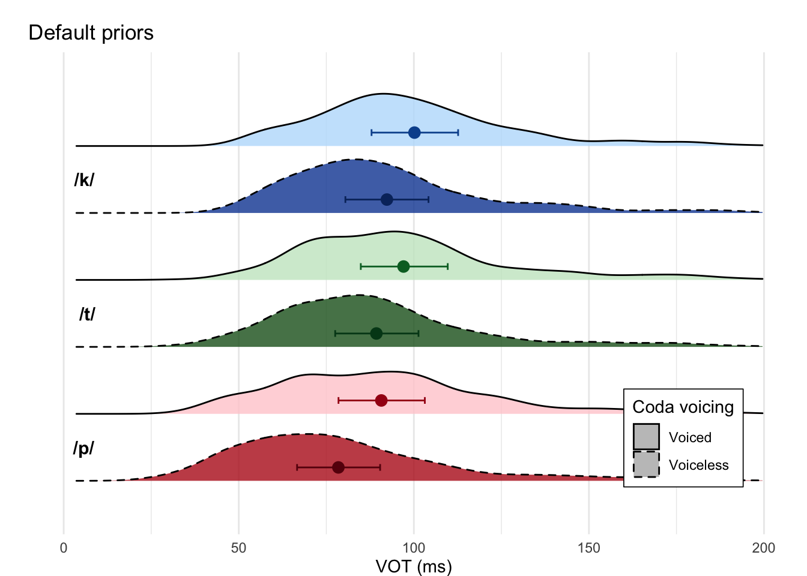
ggsave("ridge_default.png", plot = p_default, bg = "white", width = 7, height = 5, dpi = 300)Informed-prior model
p_informed <- make_ridge_plot(bayes_model_maximal_informed, plot_title = "")
print(p_informed)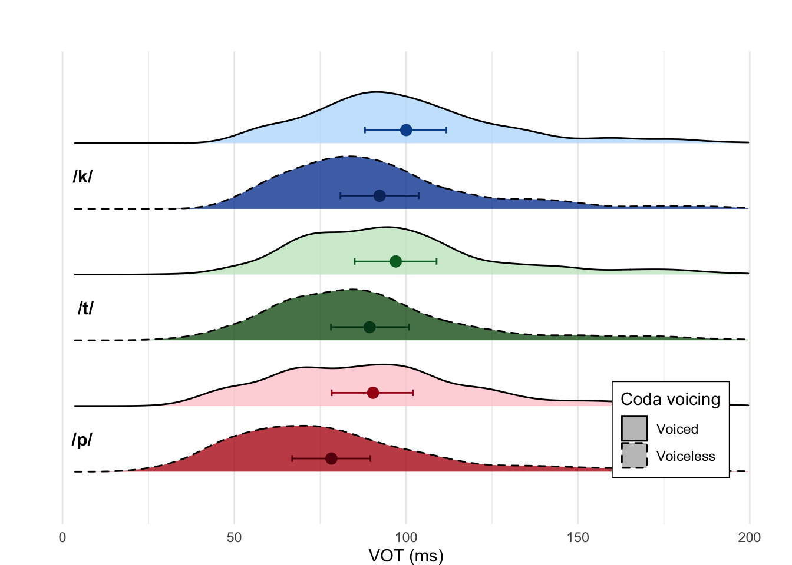
ggsave("ridge_informed.png", plot = p_informed, bg = "white", width = 7, height = 5, dpi = 300)